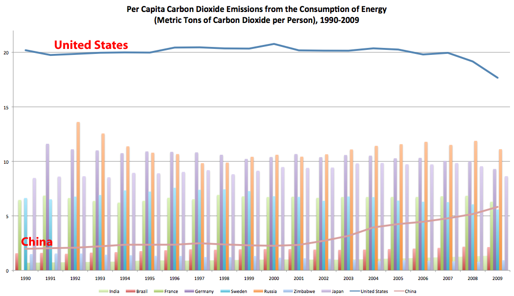

Chapter 9: What Are Governments
| |||||||||||||||||||||||||||||||||||||||

 "Price the Polluters Rally" in Melbourne, Australia. Photo by Takaver via Flickr. |
Decisions that affect climate change are made by individuals, families, businesses, neighborhoods, religious groups and governments. Since 1988 there has been a firm commitment by the U. S. government to continue research, but when it comes to policy issues that can affect the nation's economy, e.g. taxes on carbon dioxide emissions, tax credits for alternative energy systems, incentives to industry to develop very long-term sustainable technology, there are ongoing debates in Congress.
The objections to federal programs to reduce the emission of greenhouse gases usually revolve around cost and the effects on our economy. Nearly everyone wants a clean environment, but not many want to pay for steps that would lead to that. Laws are not passed by individual law makers, but by an entire body of law makers who represent different regions, interests, and points of view. The process frequently involves compromises. Proposed strong environmental laws are sometimes weakened so they will receive enough votes to pass, and sometimes simply fail altogether.
II. The 1990s:
Early Federal Action on Climate Change
In 1988, when talk of global warming hit the front pages in the United States, George H. W. Bush was running for president. He promised, if elected, that the problem would be high on his agenda. In 1989, he took an important step by establishing the U.S. Global Change Research Program. The USGCRP is a long-term, coordinated program with set goals:
-
Address key uncertainties about changes in the Earth system,
both natural and human-induced - Monitor, understand, and predict global change
- Provide a sound scientific basis for national and
international decision-making on global change issues
The USGCRP is the largest global change research program in the world.
Under this program, it has been possible to coordinate the work of
dozens of agencies supporting hundreds of research projects involving
thousands of scientists. Throughout the 1990s, Presidents Bush and
Clinton and the members of Congress continuously gave this program a
high priority.
President Bill Clinton and Vice President Al Gore made a strong commitment to environmental protection. In 1993, President Clinton ordered the Department of Energy and the Environmental Protection Agency to work together in drafting a plan for reducing greenhouse gas emissions to no more than the amount produced by our country in 1990 and to accomplish this by the year 2000.
The two agencies drafted for the president a Climate Change Action Plan and Assessment, which proposed 50 actions to reduce the emission of greenhouse gases and to assess how well the United States is doing in slowing further climate change. Most of the actions involved energy conservation, and industries in the United States were requested to cooperate on a voluntary basis. Congress was asked to appropriate funds to carry out the plan. After a series of hearings, they agreed to appropriate the funds.
| Investigation |
|
 |
Read testimony from a Congressional hearing before the Committee on Science, Space and Technology in 1993. |
| |
|
Many U.S. companies responded very positively to these recommendations. For example, the Green Lights program, which was started under the first Bush administration and expanded under the Clinton administration, encouraged companies to install energy efficient lighting in place of the lighting systems they once used. While the installation was expensive, the new lights would pay for themselves in lower electric bills within a couple of years. More than a thousand companies signed up to overhaul their lighting systems.
Another successful program has been an effort by the Environmental Protection Agency (EPA) to certify electrical equipment that uses a minimum amount of energy with an "Energy Star" label. The public has responded very positively to this program by purchasing the energy-efficient products in preference to those that do not have the "Energy Star" label. In 1995, the Green Lights program was merged with the Energy Star program. Such programs are very promising because electricity generation accounts for more than a third of the greenhouse gas emissions in the United States.
| Total CO2 emissions by sector Source: US EPA Inventory of U.S. Greenhouse Gas Emissions and Sinks:
1990-2009, USEPA #430-R-11-005
|
{kind=link}
However, the positive gains made by programs such as Green Lights and Energy Star were offset by Americans' choices of cars and driving habits. In the 1990s and into the early 21st century, approximately one third of the greenhouse gases emitted from the United States came from motor vehicles. New technologies improved gas mileage so that an average passenger car got up to 28 miles per gallon. However, light trucks, vans, and sport utility vehicles, which averaged only 20 miles per gallon, became increasingly popular. The result was that Americans were burning more fuel per mile.
An additional problem was a change in driving habits. Speed limits increased in most states, and higher speeds reduce fuel efficiency. A van that gets 20 miles per gallon at 55 mph gets only 16 miles per gallon if driven at 65 mph. Speeding up to 75 mph means that the driver can go only 13 miles on a gallon of gas. And to make matters worse, Americans are driving more than ever before.
President Clinton's proposed budget for fiscal year 2000 included $264 million to continue a government-sponsored program to develop a family car capable of 80 miles per gallon, which would mean a two-thirds reduction in carbon dioxide emissions. Investment in alternative energy sources for these two needs, transportation and energy production, continued to hold importance to later administrations.
QUESTION 9.1. Think about your state and region. Do you think voters would support programs like the Climate Change Action Plan? Why and why not?
The debates in our nation's capitol continued throughout the 1990s and into the 21st century. In general, funds for research were supported, but other actions were hard-fought battles.
III. What Is The World Doing?
In an effort to learn more about Earth's climate the United Nations, in 1988, established the Intergovernmental Panel on Climate Change
(IPCC). The Panel formed several working groups: two groups comprising
2,500 scientists from around the world, who would coordinate scientific
research on climate change, and decide what measures should be taken;
and a third group, consisting primarily of economists who would examine
the economic and societal impacts of various actions.
The IPCC published its first assessment report in 1990, a supplementary report in 1992, a second assessment report (SAR) in 1995, a third assessment report (TAR) in 2001, and a fourth assessment report (AR4) in 2007. Also in 2007, the IPCC collectively was awarded the Nobel Peace Prize...
"for their efforts to build up and disseminate greater knowledge about
man-made climate change, and to lay the foundations for the measures
that are needed to counteract such change."
It is fair to say
the work of the IPCC convinced political leaders in countries around the
world that climate change could have serious consequences, and that
they needed to talk about what could and should be done. In the years
since its founding, the IPCC has released five comprehensive reports of
the findings of the working groups.
The fifth assessment report (AR5) in 2014 (http://ipcc.ch/pdf/assessment-report/ar5/syr/SYR_AR5_LONGERREPORT.pdf) warned that climate change could stall or even
reverse generations of progress against poverty and hunger, threaten society with food shortages, refugee crises, the flooding
of major cities and entire island nations, mass extinction of plants
and animals, and a climate so drastically altered it might become
dangerous for people to work or play outside during the hottest times of
the year.
Despite the wide publicity for the work of the IPCC and the need to slow
the rate of greenhouse emissions, the disagreement remains about who
ought to claim responsibility for the problem.
The Earth Summit, 1992
In 1992, top government officials from more than 150 countries met under United Nations sponsorship in Rio de Janeiro, Brazil, to discuss environmental and economic issues, including climate change. Because this was the largest international convention ever heldmore than 25,000 people attendedit is known as the Earth Summit.
One of the most important results of this extraordinary meeting was a draft treaty, called the United Nations Framework Convention on Climate Change (UNFCCC). The treaty acknowledged the need for all nations to participate in efforts to slow global warming. Reaching an agreement as to how to proceed, however, would be no easy matter and was left to be addressed at future meetings.
President George H. W. Bush directed the U.S. delegates to the Earth Summit to make sure that the language in the treaty avoided any firm commitments that might weaken the U.S. economy. Other countries, as you can imagine, pressed for measures that met their own objectives. A significant concern was the economic inequity between the industrialized nations and the developing countries. Nevertheless, progress was made after much discussion and an agreement or treaty on broad basic principles was reached. A treaty does not become legally binding unless it is signed by authorized representatives of the participating nations and then ratified by the law-making body of each country. In the United States, President Bush signed the UNFCCC treaty, which was ratified by the Senate in October 1992. Around the world, 179 governments have ratified the treaty.
Each year after the UNFCCC was drafted, representatives from countries
around the world held meetings to determine exactly how and when the
agreement should be implemented. The UNFCCC has been providing mechanisms and encouragement for every nation to develop an Intended Nationally Determined Contribution (INDC) outlining what post-2020
climate actions they intend to take. INDCs will help determine whether the world achieves an ambitious
2015 agreement and is put on a path toward a low-carbon,
climate-resilient future. INDCs submitted by countries are available on the UNFCCC website http://www4.unfccc.int/submissions/indc/Submission%20Pages/submissions.aspx. As of September 2015, 62 parties to the UNFCCC had
formally submitted their INDCs. The Paris agreement will come into
effect in 2020, empowering all countries to act to prevent average
global temperatures rising above 2 degrees Celsius and to reap the many
opportunities that arise from a necessary global transformation to clean
and sustainable development.
Partial History of UNFCCC activity
Forging the Kyoto Protocol
 Climate Change Conference Meets in Kyoto, Japan, 1-10 December, 1997 . Photo by United Nations via Flickr. |
When the UNFCCC delegates met in Kyoto, Japan, in December 1997, the objective was to set legally binding limits on the emissions of greenhouse gases resulting from human activities.
The 1992 signers of the UNFCCC in Rio acknowledged that industrialized nations are primarily responsible for the increasing atmospheric concentration of greenhouse gases. Developed countries, therefore, would need not only to take measures to curtail future increases in emissions but also to cut back, over a period of time, to earlier levels. The signers also recognized the developing countries had a relatively low per capita greenhouse gas emission. However, as the developing countries would become more industrialized, their share of greenhouse gases emissions would increase. Therefore, finding an equitable balance to satisfy the needs of both developed and developing nations became, and remained, the difficult task faced by the participants in the Kyoto meeting.
|
Immediately after the Kyoto Conference, President Clinton issued the following statement: "I am very pleased that the United States has reached an historic agreement with other nations of the world to take unprecedented action to address global warming. This agreement is environmentally strong and economically sound. It reflects a commitment by our generation to act in the interests of future generations.
"No nation is more committed to this effort than the United States. In Kyoto, our mission was to persuade other nations to find common ground so we could make realistic and achievable commitments to reduce greenhouse gas emissions. That mission was accomplished . . . "There are still hard challenges ahead, particularly in the area of involvement by developing nations. It is essential that these nations participate in a meaningful way if we are to truly tackle this global environmental challenge. But the industrialized nations have come together, taken a strong step, and that is real progress." |
In addition to the political agendas policymakers of each country have, there are business interests that try to influence the outcomes of the UNFCCC meetings. Oil-producing nations and the fossil fuel industries share economic interests that strongly influence their outlook on just what measures should be taken. In short, the issues, influences, and consequences are complex, and progress was slow in Kyoto. Nevertheless, a significant agreementthe Kyoto Protocolwas eventually reached. According to the Kyoto Protocol, the United States would reduce its emissions of greenhouse gases 7 percent below 1990 levels by the year 2012. Similarly, other industrialized nations agreed to mandatory reductions. Developing nations, however, were not required to reduce or limit their emissions of greenhouse gases.
Kyoto and Beyond
Deciding just how to implement the Kyoto agreement continued at the November 1998 meeting in Buenos Aires. Differing views and proposals were considered, and eventually the Buenos Aires plan of action was adopted. Deadlines for finalizing work on the Kyoto Protocol were agreed to, as well as how to overcome barriers in transferring environmentally friendly technologiessuch as those encouraged in the U.S. Green Lights programto developing countries. Still, not all the wrinkles were ironed out. In October 1999, the next scheduled international conference took place in Bonn, Germany. Even then, there were still issues to resolve.
| See summary of the response of the United States to the Kyoto Protocol which was mixed. |
After years of negotiation, the Kyoto Protocol went into force in 2005. However, with the termination of the agreement approaching in 2012, the international community again began the process of making a framework for action around the issue of climate change.
|
New high rise housing in Wanzhou City, China, to accommodate people displaced by the construction of the Three Gorges Dam. Photo by Ray Devlin [CC-BY-2.0], via Wikimedia Commons |
{kind=link}
Countries who were party to the UNFCCC continued to meet annually to try to reach an agreement on emissions reductions. The opposing interests of developed and developing countries continue to create controversy to this day, especially as some of the developing countries are industrializing at an accelerated pace. For developing nations, combating extreme poverty and achieving social and economic development are pressing concerns. In India, for example, 456 million people were estimated to be living on less than a US$1 day in 2005, and 50% of the population have no access to electricity.
China, India, and other nations argue that their time frame for reducing emissions should be different from that of developed nations, who have had centuries to improve quality of life for their people, and to add greenhouse gases to the atmosphere through pollution. Brazilian President Luis Inacio Lula da Silva expressed frustration with the attitude of wealthier developed nations in a speech in 2007: "We don't accept the idea that the emerging nations are the ones who have to make sacrifices, because poverty itself is already a sacrifice." The government of China likewise maintains this attitude about differing levels of responsibility for action on climate change: "It must be pointed out that climate change has been caused by the long-term historic emissions of developed countries and their high per capita emissions" reported Jiang Yu, a Chinese Foreign Ministry spokeswoman, in February 2007.
|

Data source: U.S. Energy Information Administration International
Energy Statistics. Note: Data sets for Russia and Germany
(formerly the USSR and East Germany/West Germany, respectively) begin in
1991. |
On the other hand, some U.S. policymakers pointed out that China, India, Brazil, and other nations would soon surpass developed nations in total emissions. [As of 2014, China was the largest emitter of carbon dioxide.] Investing in low-or no-emission technology will be costly for all countries, and U.S. lawmakers who depend on support from polluting industries worry about the financial effects that .
|
Data source: U.S. Energy Information Administration International Energy Statistics. Note: Data sets for Russia and Germany (formerly the USSR and East Germany/West Germany, respectively) begin in 1991. |
Although all of the countries who are party to the UNFCCC agree about that an increasing concentration of greenhouse gases in the atmosphere will have serious consequences, the issues of development and sharing responsibility continue to frame the discussion and to cause controversy.
2007
 Participants at COP 16 in Cancun, Mexico, 2010. Source: UN Climate Talks [CC-BY-2.0], via Wikimedia Commons Participants at COP 16 in Cancun, Mexico, 2010. Source: UN Climate Talks [CC-BY-2.0], via Wikimedia Commons
|
The next major attempt to create a new international agreement on the Kyoto Protocol's successor came in December 2007 at a UNFCCC meeting in Bali, Indonesia. This meeting was marked by tensions between the United States and the European Union over setting binding emissions cuts. The official U.S. delegation continued to insist that the United States would not agree to binding emissions targets without similar commitments by major developing nations. Despite tense negotiations, the outcome of this meeting was the establishment of a two year time-table for further negotiations and the establishment of two negotiating "tracks": one for the Ad Hoc Working Group on Further Commitments for Annex I Parties, and the other for the Ad Hoc Working Group on Longterm Cooperative Action under the convention. One track was for groups opposed to mandatory limits, and the other group included signatories to the Kyoto Protocol who wanted to build a new agreement based on the emissions targets of the Kyoto Protocol. The Bali Roadmap offered the conclusion that "deep cuts in global emissions will be required," but did not include any concrete emissions targets.
This meeting also revealed divisions within the United States about what should be done about climate change. The official U.S. delegates strongly opposed firm targets for greenhouse gas reductions without binding reductions on the part of developing nations, while American activitists, including former Vice President Al Gore, criticized this stance.
2009
In December 2009, representatives met again in Copenhagen, Denmark, to wrap-up the time table agreed upon at Bali two years earlier. This conference was widely publicized and expectations among observers were high that this summit would lead to a breakthrough in negotiations among major emitters. However, this meeting again resulted in no binding emissions targets, and the negotiations nearly dissolved. Direct negotiations between heads of state, including U.S. President Barack Obama and Chinese Premier Wen Jiabao, resulted in a last-minute, non-binding accord, pledging:
- Participants' commitment to take actions to stall the warming of the planet at 2 degrees Celsius above the average temperature at the time of the industrial revolution [See Temperature Scales.]
- Plans to create a multi-billion dollar global fund for developing
nations who are especially vulnerable to climate change.
- Plans to implement REDD (Reducing Emissions from Deforestation and Forest Degradation), a controversial scheme to pay developing countries to preserve forests.
Only a few countries have agreed to adopt or associate themselves with this accord, although the details of REDD and of a global fund for technology transfer and aid to developing nations have been discussed at subsequent meetings. After this conference, some observors felt pessimistic about the ability of the United Nations and the Kyoto framework to address the issue of climate change. Some countries (Russia, Japan, and Canada) have declared that they will not sign on to a future iteration of the Kyoto agreement if the United States, China, and India are not also signatories. Additionally, many scientists worry that the voluntary cuts pledged to at the conference and by signatories to the Copenhagen Accord would not be adequate to meet the 2 degree Celsius goal.
Help for climate vulnerable nations?
Some developing countries are deemed to be especially vulnerable to the immediate effects of climate change, including coastal flooding for islands and low-lying communities; increased storm surge in some areas; and droughts and desertification in others. In developing countries with few resources, these kinds of natural disasters could have enormous consequences for human populations. In a United Nations General Assembly debate in 2008, a representative from Barbados expressed these concerns:
| Photo by Andrea Booher (This image is from the FEMA Photo Library.) [Public domain], via Wikimedia Commons |
{kind=link}
"Climate change of very damaging proportions, which poses a very serious danger to the very existence of our countries, is already occurring and the longer the international community postpones the necessary greenhouse gas emission cuts, the more adaptation will be required by small island developing States at much greater cost... the United Nations must redirect itself towards immediate delivery of assistance to vulnerable countries."
At Copenhagen and the subsequent UNFCCC meeting in Cancun, Mexico, in 2010, delegates acknowledged the unique challenges faced by vulnerable developing nations, agreeing to set up a multi-billion dollar fund to provide assistance and facilitate the transfer of low-emitting technologies. However, the method for collecting and distributing money from the fund has not yet been agreed upon. Some of these nations created the Climate Vulnerable Forum following the Copehagen conference to advocate for themselves. Representatives from these nations met again in November 2011.
The Kyoto Protocol ended in 2012, but the year before (November 2011), the international community Conference of the Parties (COP) met in Durban, South Africa (COP 17), then again in 2012 Nov 26-Dec 7 in Doha, Qatar (COP 18). The Kyoto Protocol was extended until 2020. There were meetings 2013 Nov 11-22 in Warsaw, Poland (COP 19), 2014 Dec 1-14 in Lima, Peru, and then 2015 Dec in Paris (COP21), France, where the The Paris Agreement was forged. 2016 Nov 7-18, Marrakesh, Marrakech, Morocco (COP 22) parties begin preparations for entry into force of the Paris Agreement.
For latest news on UNFCCC, see the UN Climate Change Newsroom.
Question 9.2. What is causing international negotiations on responding to climate change to falter?
Question 9.3. Think of time when you had a difficult or controversial decision to make with a group of folks--in your school, your church, your family, or with your friends. What steps did your group take to resolve the conflict? What was the outcome? If faced with a similar situation, would you do anything differently?

The Deep Decarbonization Pathways Project (DDPP) is a project of the Sustainable Development Solutions Network of the United Nations. It is an initiative to understand and show how individual countries can transition to a low-carbon economy and how the world can meet the internationally agreed target of limiting the increase in global mean surface temperature to less than 2 degrees Celsius (C). Achieving the 2C limit will require that global net emissions of greenhouse gases (GHG) approach zero by the second half of the century. In turn, this will require a profound transformation of energy systems by mid-century through steep declines in carbon intensity in all sectors of the economy, a transition we call deep decarbonization.
V. What Is the United States Doing?
Commitment to Voluntary Action
Withdrawing the United States from the Kyoto Protocol set the tone for the second Bush administration's attitude toward addressing greenhouse gas reduction. Often citing economic concerns, President George W. Bush and his appointees in the federal government resisted the idea of adopting mandatory emissions caps on United States industries and consumers, preferring to follow of the precedent of voluntary programs like EnergySTAR.
President Bush did voice support for the development of alternative energy sources to replace greenhouse gas-emitting fossil fuels. During his tenure, American wars in the Middle East highlighted the problems of obtaining fossil fuels from foreign sources. A $1.5 billion Hydrogen Fuel Initiative is meant to support the development of a viable hydrogen fuel infrastructure by 2020. The Energy Policy Act of 2005--"to support energy security, improve air quality, and address greenhouse gases," directed the EPA to create a Renewable Fuels Standard and aimed to have 3% of U.S. passenger vehicles using biodiesel and ethanol by 2007. However, there has been criticism from both scientists and economists about the human and environmental costs of relying on fuels derived from the large-scale agricultural production of corn and other crops. The Bush administration also pledged $2 billion to a Coal Research Initiative to develop clean coal technology. Coal is an abundant natural resource in the continental United States, but its benefits as a "clean" energy source may be limited by the the destructive nature of its extraction.
Some critics worried that the Bush administration policies would not accomplishment enough quickly enough to confront the problem of rising greenhouse gas concentrations. In 2003, Massachusetts and several other states, local governments, and interest groups sued the Environmental Protection Agency for failing to regulate emissions from vehicles.
Economic Woes
In 2009, there was a slight reversal in federal climate policy. After taking office during a deep recession, President Barack Obama worked with Congress to craft the American Recovery and Reinvestment Act, a multi-billion dollar package of tax breaks, entitlements and federal grants, contracts and loans meant to stimulate the struggling U.S. economy. This legislation included large amounts of money for research and development of "clean" energy solutions to the problems of climate change, including $16.6 billion for energy efficiency and renewable energy projects. Funding to the U.S. Global Change Research Group, which had been gradually declining over the previous twelve years, was also restored to previous levels. Additionally, President Obama encouraged the EPA to review a waiver request by the state of California to enact its own motor vehicle emission standards, a request that had been repeatedly denied in previous years. The approval of this waiver request allows California and other states to create their own, more stringent emissions standards, without having to wait for the EPA to take action.
{kind=link}
However, like previous U.S. governments, the Obama administration and Congress avoided taking steps to actually regulate or curtail emissions. In 2009, the Obama administration carried on the tradition of voluntary consumer programs through the Car Allowance Rebate System (also known as "Cash For Clunkers"). Through this program, drivers had the opportunity to receive a $3500 or $4500 rebate toward the purchase or lease of a new, fuel-efficient vehicle if they turned in an older, less efficient vehicle to be destroyed. The goal of the program was to get inefficient, polluting vehicles off the road while also stimulating the purchase of new vehicles, ideally ones manufactured by U.S. automakers. Although over 600,000 people participated in the program, many scientists and economists argued that it will have little real effect on the amount of CO2 emissions in the country.
In September 2011, President Obama recommended that the EPA not move forward with revisions to the current ozone standards, to the dismay of groups who are worried about the dangers of ozone and greenhouse gases to respiratory health. The Obama administration was also confronted by the challenges of creating policies that affect many different stakeholders, including groups that have an interest in continuing to pollute all over the place.
Clean Power Plan
On June 2, 2014, the Environmental Protection Agency (EPA) proposed the Clean Power Plan to cut carbon emissions from existing power plants. Under President Obamas Climate Action Plan, EPA proposed approaches to reduce carbon pollution from new and existing power plants. The plan set out a one year comment period, with implementation in 2015. See http://www2.epa.gov/carbon-pollution-standards/regulatory-actions
| Investigation |
|
|
|
9-2. State of the Climate U. S. Government agencies such as U.S. Global Change Research Program (USGCRP), National Aeronautics and Space Administration (NASA) and National Oceanic and Atmospheric Administration (NOAA) have ongoing programs to monitor the Earth. You can find interesting documents:
|
| |
|
VI. What Are Local Governments Doing?
 A march for action about climate change in Seattle, Washington. 2007. Oran Viriyincy via Flickr. A march for action about climate change in Seattle, Washington. 2007. Oran Viriyincy via Flickr. |
As the Bush administration entered its second term, it became increasingly clear that mandatory limits to carbon emissions would not be part of the administration's environmental policy. On February 15, 2005 (the day that the Kyoto Protocol went into force for participating nations), Seattle mayor Greg Nickles announced his intention to carry out the spirit of the Kyoto Protocol in his own city, even if the United States federal government would not do so on a national scale. He urged other mayors to do the same, ultimately creating a coalition of over 130 cities representing 29 million people. "While 141 other nations have signed the Kyoto Protocol Treaty, our national government leaders has turned a deaf ear Seattle, along with other U.S. cities, will provide the leadership necessary to meet this threat," said Nickles in a public statement. In subsequent years, these cities have taken a variety of actions. In 2006, for example, the City of Chicago began an effort to model how the region's climate might change due to projected warming trends and develop plans about how to adapt to those changes, such as increased precipitation and warmer days. Voters in the city of Boulder, Colorado, approved a "carbon tax" on emissions from home energy use.
Even before this action by city mayors, state and local governments had begun to create coalitions to address the problems of climate change. However, in the United States, there are limits to the kinds of regulatory actions that state and local governments can take if those actions will contradict federal regulations.
In 2006, the lawsuit against the EPA over tailpipe emissions, Massachusetts vs. EPA, appeared on the Supreme Court docket. The EPA had argued that it did not have the right to regulate carbon dioxide and other greenhouse gas emissions as pollutants under the provisions of the Clean Air Act of 1970. In a 5-4 decision in April 2007, the Court ruled that the EPA was indeed dodging its responsibilities. Writing for the majority, Justice John Paul Stevens stated that "...EPA has offered no reasoned explanation for its refusal to decide whether greenhouse gases cause or contribute to climate change. Its action was therefore 'arbitrary, capricious, or otherwise not in accordance with law". Shortly after this decision, President Bush signed an executive order directing the EPA, the Department of Transportation, the Department of Energy, and the Department of Agriculture "to coordinate on the development of possible regulatory actions to address the emissions from mobile sources that contribute to global climate change."
Also in 2006, the state of California passed its own stringent emissions law, AB 32, the Global Warming Solutions Act of 2006. AB 32 called for a return to 1990 emissions levels by 2020 and a decrease to 80% of 1990 emissions levels by 2050 for the state. This is to be achieved through mandatory emissions caps across economic sectors, with regulations and market mechanisms to be determined by the California Air Resources Board (CARB). This act is not without controversy; if have been challenged in the courts and through California's ballot initiative process.
| Investigation |
|
|
|
9-3. What Can Cities Do? Visit one or more of these sites:
See also information about New York City plan (released June 2013)
|
| |
|
| Investigation |
|
|
|
9-4. What Can the U.S. Military Do About Climate Change? Watch these videos from Earth: The Operator's Manual and discuss your views in written essay and/or group discussion with your friends and colleagues. The Pentagon & Climate Change
|
| |
|
VII. Conclusion
If you've ever tried to decide something in a group, you know that it
can get harder as the group gets bigger. Working with more people means working with more peoples' opinions, values, and goals.
Reaching an agreement among 7 billion people seems like a daunting task. However, although making decisions about what to do about climate change at the local level might seem easier, piecemeal regulations may be ultimately less effective than a global solution like the one attempted through the United Nations framework. Governments are able to set regulations for their own territories and citizens, but ultimately greenhouse gases do not recognize human borders. What is emitted in one place will not stay there.
Question 9.5.
What do you think about government action on climate change?
Is it better to work toward a global solution or for local communities to take actions?
What are the challenges of each scenario?
What are the benefits?
It is important to note that any solutions to climate change problems are likely to be the very same solutions to more immediate issues centering on our energy use. The "elephant in the room" is our immersion in a fossil fuel driven society. Fossil fuels have provided a veritable boom in humans ability to wield energy, but have had highly toxic effects on human health, with accompanying societal health costs. Since fossil fuels are inherently non-renewable, they will be gone sooner or later, depending on our rate of burning them up. But as supplies decrease, a host of economic problems will growdecreasing supply not able to serve increasing demand. National security is affected as well, with policies that must take into account protection of fossil fuel sources, nationally and globally.
| Thoughts from GSS Director, Alan Gould, May 2014: The just released National Climate Assessment is a little short on the Mitigations section in the Responses part of the report. Since people in general need to know what they can do to help out, I offer these ideas:
What do you think of these ideas? December 2019: Check out theClimate Change Solutions Simulator toexplore the likely consequences of energy, economic growth, land use, and other policies and uncertainties connected with climate change. WithEn-ROADS you can model interventions needed for reducing global greenhouse gas emissions to limit warming. |
| For new material relating to this chapter, please see the GSS website Staying Up To Date page: http://www.globalsystemsscience.org/gss/uptodate/cc/ch8 |